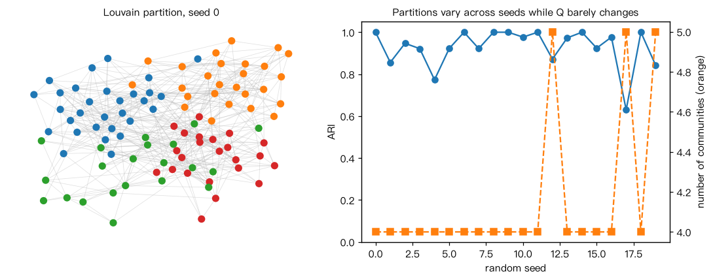
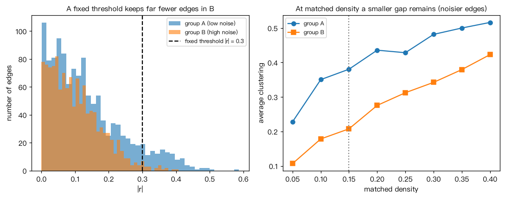
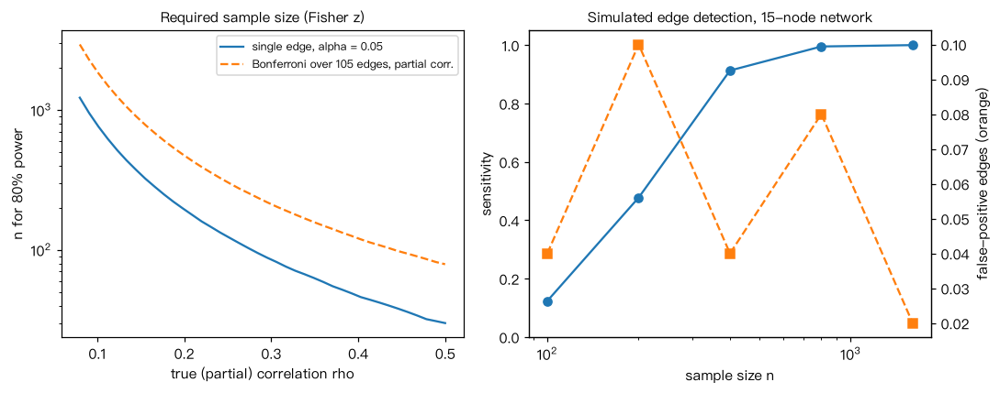
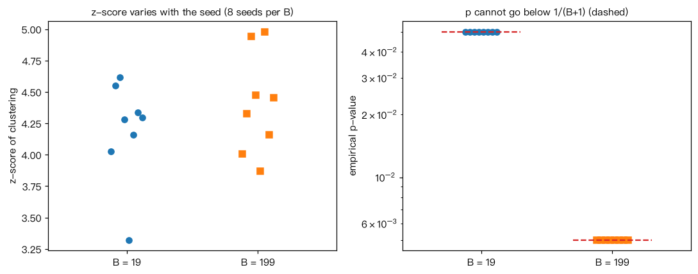
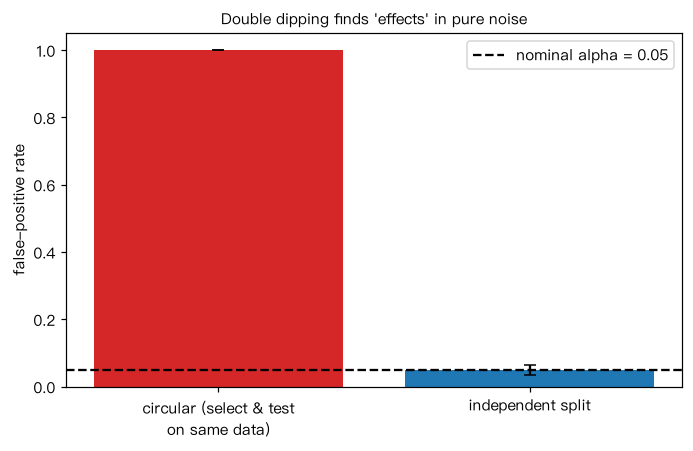

研究问题、可复现分析与敏感性分析
怎样提出可回答的网络研究问题，做到可复算，并用敏感性分析和替代解释检验结论是否稳健
网络是构建出来的：节点怎么定义、边用什么统计量、阈值取多少、社团算法和随机基线怎么选，每一步都是分析者的选择。本专题讨论的核心问题是：一个网络分析的结论，是数据的性质，还是分析选择的产物？
围绕这个问题，本专题按一项研究的生命周期组织：
- 设计阶段：怎样把研究方向改写成可回答、可检验的网络研究问题（提出网络研究问题），怎样在看到结果之前写下分析计划（预注册与分析计划），以及需要多大的样本（统计功效与样本量）。
- 执行阶段：怎样组织数据与代码，使结果可以被他人和自己复算（可复算的分析、计算环境与工作流、随机性控制）。
- 检验阶段：怎样用敏感性分析、替代解释排查和多元宇宙分析检验结论的稳健性（敏感性分析与替代解释、多元宇宙分析与设定曲线）。
- 报告与共享阶段：每一步应报告什么（网络研究的报告清单），数据和代码怎样共享（数据与代码共享），以及怎样负责任地使用和披露生成式 AI 辅助工具。
网络研究中关于可重复性的争论与案例见可重复性危机与负结果。这些方法把其他专题中的具体问题收束为同一原则：脑连接组：结构与功能连接中的阈值选择、症状网络与网络精神病学中的稳定性检验、基因调控网络推断与共表达分析中的推断可靠性、疾病模块、网络邻近度与药物重定位中的度匹配零模型，都是它的不同侧面。网络构建中的统计检验与重抽样方法见网络构建与统计验证，网络分析的一般流程与工具见网络分析流程与 NetworkX 实践，结果的图表呈现与报告结构见结果呈现与研究前沿。
几个容易混淆的术语（本站采用 The Turing Way 手册的划分）：同一数据 + 同一分析 → 相同结果，称为可复算（reproducible）；不同数据 + 同一分析 → 一致结论，称为可重复（replicable）；同一数据 + 不同的合理分析 → 一致结论，称为稳健（robust）；不同数据 + 不同分析 → 一致结论，称为可推广（generalisable）。不同领域对 reproducible 与 replicable 的用法并不统一，写作时应先给出定义。
Contents知识页面
VIDEO讲解视频
文字稿
这是功能磁共振扫描。它能记录大脑各个区域，随时间变化的活动信号。 2020年的一项研究，把同一份脑影像数据，交给七十个独立的研究团队，检验同样九个事先确定的假设。 结果，没有两个团队选择了完全相同的分析流程。每一条线，代表一个团队的流程。 对同一个假设，有的团队得到显著，是绿点；有的不显著，是红点。分歧相当大。 数据一样，结论却不一样。结论可能来自数据，也可能来自分析选择。 这一期分三部分。 第一部分，一个好问题，和一份可以复算的分析。 第二部分，随机性和分析选择怎样影响结论。 第三部分，替代解释和样本量。 先看第一部分。拿一个数据库去分析阿尔茨海默病，这只是一个方向，还不是问题。 好问题要说清：节点是什么，边是什么，数据来自哪个库、哪个版本。 还要说清目的：描述、比较、预测，还是解释机制。目的不同，需要的证据也不同。 最好事先写下判断标准。灰色柱子是度匹配随机基因的分布；疾病基因的连接要超过这条线，才算支持假设。 最后检查：如果只看单个基因也能回答，就不需要网络。 第一部分的另一半，是可复算。科学界一直在讨论可重复性：别人重做一遍，能不能得到同样的结果。 可复算的意思是：同样的数据和代码，别人能得到同样的结果。这是一条完整的链：原始数据、脚本、结果、图表。 原始数据只读，不手工修改。数据库的版本号和下载日期，写进说明文件。 关键数字要由脚本产生。在图形界面里点出来的结果，很难被别人重现。 软件版本也要记下来，同一个算法在不同版本里可能不一样。用版本控制管理代码，每完成一步提交一次。 完成之前，从原始数据出发完整跑一遍，确认所有图表都能重新生成。 下面进入第二部分。很多网络算法带有随机性，比如社团检测和随机化检验。随机性分两层处理。 第一层是可复算：记录并固定随机种子，再跑一次，结果完全相同。 第二层是稳健：结论不能依赖某一个种子。换五十个种子，模块度在一个范围里波动，社团数从五个到八个。 还有蒙特卡洛误差。上面是经验P值的公式：b是随机网络里，统计量不小于观测值的次数；B是随机网络的总数。 它的标准误约为根号下P乘一减P再除以B。真实P值是零点零四时，用一百个随机网络，标准误约零点零二，不少估计跑到了零点零五右边。 用一千个随机网络，标准误降到零点零零六左右。随机网络的数目和种子，都要事先确定。 再看分析选择。这是同一个相关矩阵，我们逐步提高阈值，只保留最强的那部分边。 网络越来越稀疏。画圈的是连接最多的三个节点，阈值一变，它们也在换。 右图横轴是密度，蓝线是平均度，黄线是平均聚集系数，都随阈值而变。所以要扫描一段区间，画成曲线来报告。 本站的脑网络专题里，有一个阈值实验的交互演示。拖动保留密度，网络和枢纽脑区都会跟着变。 把这个想法推广：每个分析环节都有几种合理选择，把所有组合都跑一遍，叫多元宇宙分析。 比如三种边的定义，乘四个密度，再乘两个指标，就是二十四个宇宙。 把每个宇宙的组间差异从小到大排起来，就是设定曲线。下面的方块，标出每个宇宙用了哪些选择。 它回答的是：结论对哪些选择敏感。 最后是第三部分，替代解释。第一条要查的，是两组网络的密度是否相同。 这两组都是随机网络，没有结构差别，只是右边边多一些，聚集系数和路径长度就跟着变了。 第二，查度匹配。第三，查混杂因素：头动、批次、细胞组成，可能同时影响网络和结果。 第四，检验了多少节点和指标，要做多重比较校正。第五，不能用同一份数据，既挑选特征，又检验它们。 再看样本量。十五个节点的网络，就有一百零五条边，每一条都要估计。 单条边需要多少样本，可以用费舍尔变换来估算，公式在这里。 分子是两个正态分位数之和，分别对应显著性水平和统计功效；分母是相关系数的费舍尔变换；k是控制的变量个数。 要以八成功效检出零点二的相关，大约需要一百九十四个样本。 如果要对所有边做多重比较校正，再用偏相关控制其他变量，就要四百七十多个。 好，我们总结一下。 第一，好问题要说清比较对象和判断标准。 第二，好分析要能从原始数据一键重跑，种子和版本都有记录。 第三，好结论要在合理的分析选择范围内都成立。
INTERACTIVE交互可视化
CODE计算实现
8 个完整可运行的 Python 示例，每个都给出代码、输出图和解读；可在浏览器中直接运行，或下载 Jupyter Notebook · Python 脚本 · 在 JupyterLite 中打开 ↗。
 阈值敏感性——枢纽排名随网络密度如何变化
阈值敏感性——枢纽排名随网络密度如何变化
随机种子敏感性——社团划分的可重复程度
替代解释——组间差异来自“结构不同”还是“连接整体变弱” 多元宇宙分析——把所有合理的网络构建选择组合起来同时报告
多元宇宙分析——把所有合理的网络构建选择组合起来同时报告
网络边检测的统计功效——Fisher z 近似与蒙特卡洛模拟
随机种子与蒙特卡洛误差——零模型 z 分数和置换 p 值本身也是估计量
循环论证（double dipping）——用同一份数据选边又检验边{
"python": "3.15.0",
"platform": "macOS-27.2-arm64-arm-64bit-Mach-O",
"packages": {
"networkx": "3.7",
"numpy": "2.5.4",
"scipy": "1.18.1"
},
"parameters": {运行清单（provenance manifest）——记录环境、参数、种子与输入输出的哈希Practice自测、练习与案例
References核心文献
Sandve 等 2013：Ten simple rules for reproducible computational research
- 背景：计算研究的结果往往难以由他人甚至原作者复现。PLoS Computational Biology 9(10):e1003285，DOI 10.1371/journal.pcbi.1003285。
- 核心内容：十条可操作的规则，包括记录每个结果是如何产生的、避免手工修改数据、记录外部程序的版本、用版本控制、记录随机种子、保存图表背后的原始数值等。
- 阅读提示：边读边对照自己的项目目录，逐条打勾；全文很短，约 30 分钟。
- 思考题：十条规则中，哪一条在你的研究里最难做到？你打算怎样变通？
Botvinik-Nezer 等 2020：Variability in the analysis of a single neuroimaging dataset by many teams
- 背景：同一份数据，不同的合理分析流程会得到多大差异？Nature 582:84–88，DOI 10.1038/s41586-020-2314-9。
- 核心发现：70 个团队独立检验 9 个预设假设，没有两个团队采用完全相同的流程；同一假设上各团队的结论一致性有限，分析流程的多个方面与结果差异有关；但各团队的中间统计图之间相关较高，跨团队的元分析得到了一致的激活区域。
- 阅读提示：注意“中间结果相似、最终二元结论不同”这一现象——阈值化把连续证据变成了“是/否”，与脑连接组中网络阈值的问题同源。
- 思考题：如果你的分析交给 10 个团队独立完成，你认为哪一步最可能导致结论分歧？
Steegen 等 2016：Increasing transparency through a multiverse analysis
- 背景：数据处理阶段的“合理选择”会在不知不觉中影响结论。Perspectives on Psychological Science 11(5):702–712，DOI 10.1177/1745691616658637。
- 核心内容：提出“数据多元宇宙”的概念，主张把所有合理处理选择下的结果一并报告，并用图示呈现结论对选择的依赖。
- 阅读提示：把文中的“数据处理选择”替换为“网络构建选择”（图谱、边统计量、阈值），思考自己研究的多元宇宙有多大。
- 思考题：你的研究中，哪些选择确实没有公认最优解、应放进多元宇宙？哪些选择应在事先就排除？
Nosek 等 2018：The preregistration revolution
- 背景：预测与事后解释在实践中常被混淆。PNAS 115(11):2600–2606，DOI 10.1073/pnas.1708274114。
- 核心内容：阐述预注册如何区分验证性与探索性分析，并讨论数据已存在、需要偏离计划等不理想情形下的实用策略。
- 阅读提示：重点读不理想情形的部分，它与使用公共数据库的网络研究最相关。
- 思考题：如果你的数据已经下载并做过描述性统计，怎样设计一个仍然可信的预注册？
Wilkinson 等 2016：The FAIR Guiding Principles for scientific data management and stewardship
- 背景：数据共享需要让人和机器都能找到并重用数据。Scientific Data 3:160018，DOI 10.1038/sdata.2016.18。
- 核心内容：提出可发现、可访问、可互操作、可重用四类原则及其细则，强调持久标识符、丰富元数据、标准词表与清晰许可。
- 阅读提示：对照数据与代码共享中的表格，检查你的网络数据是否满足每一条。
- 思考题：受隐私限制无法公开的患者数据，怎样仍然满足 FAIR 中的“可发现”和“可访问”？
Burger 等 2023：Reporting standards for psychological network analyses in cross-sectional data
- 背景：心理网络分析缺少关于“报告什么”的规范，这为研究者自由度留下空间。Psychological Methods 28(4):806–824，DOI 10.1037/met0000471。
- 核心内容：按方法与结果两部分，给出通用分析流程（样本、变量选择、预处理、估计方法及参数、准确性与稳定性、软件版本与种子）和特定分析流程（组间比较、中心性、边差异、聚类）的报告要求，并附两个用公开数据完成的示例。
- 阅读提示：即使不做症状网络，“通用分析流程”部分也可直接迁移到脑网络和分子网络。
- 思考题：把你最近读过的一篇网络论文按这份规范逐项核对，缺了哪些信息？
Wilson 等 2017：Good enough practices in scientific computing
- 背景：面向非专业程序员的研究者，什么是“足够好”的计算实践？PLoS Computational Biology 13(6):e1005510，DOI 10.1371/journal.pcbi.1005510。
- 核心内容：从数据管理、代码组织、协作、项目结构、版本控制、写作六个方面给出低门槛的建议，强调“先做到够用，再追求完美”。
- 阅读提示：重点读数据管理和项目结构两节，可直接套用于自己的研究项目。
- 思考题：作者建议“为每个项目准备一个 README”。请为你正在进行的一项分析写出 README 的前 10 行。
Forbes 等 2017 与 Borsboom 等 2017：症状网络可重复性争论
- 背景：Forbes 等，“Evidence that psychopathology symptom networks have limited replicability”，Journal of Abnormal Psychology 126(7):969–988，DOI 10.1037/abn0000276；Borsboom 等，“False alarm? A comprehensive reanalysis …”，同刊 126(7):989–999，DOI 10.1037/abn0000306。
- 核心内容：前者认为条件独立网络的边和中心性在相似样本间复现差；后者重新分析后认为问题主要来自方法选择。
- 阅读提示：把两篇对照阅读，列出双方在数据处理上的具体分歧，再看 Fried 等（2018）的多样本研究如何推进了这一问题。
- 思考题：这场争论中，哪些分歧可以通过事先的报告规范和代码共享避免？
Data & tools相关数据与软件
Further延伸资源
| 类型 | 资源 | 说明 |
|---|---|---|
| 手册 | The Turing Way（The Turing Way Community，DOI 10.5281/zenodo.3233853） | 可复现、合作与合乎伦理的数据科学社区手册；本专题的术语划分与环境、许可、研究纲要等内容参照其“可复现研究指南”；CC BY 许可 |
| 论文 | Simmons, Nelson & Simonsohn 2011，doi.org/10.1177/0956797611417632 | “研究者自由度”如何制造假阳性，30 分钟可读完 |
| 论文 | Simonsohn, Simmons & Nelson 2020，设定曲线分析，doi.org/10.1038/s41562-020-0912-z | 多元宇宙结果的呈现与联合推断方法 |
| 论文 | Silberzahn 等 2018，多团队分析，doi.org/10.1177/2515245917747646 | 29 个团队分析同一数据的结果差异 |
| 论文 | Luppi 等 2024，doi.org/10.1038/s41467-024-48781-5 | 768 条功能连接组构建流水线的系统评估 |
| 论文 | Dafflon 等 2022，doi.org/10.1038/s41467-022-31347-8 | 用主动学习近似探索神经影像分析的多元宇宙 |
| 论文 | Hallquist & Hillary 2019，doi.org/10.1162/netn_a_00054 | 106 项临床图论研究的方法回顾与建议 |
| 论文 | Kriegeskorte 等 2009，doi.org/10.1038/nn.2303 | 循环分析（double dipping）的危害 |
| 论文 | Kerr 1998，HARKing，doi.org/10.1207/s15327957pspr0203_4 | 结果已知后提出假设 |
| 论文 | Wicherts 等 2016，doi.org/10.3389/fpsyg.2016.01832 | 研究各阶段研究者自由度的检查清单 |
| 论文 | Van den Akker 等 2021，doi.org/10.15626/MP.2020.2625 | 二次数据分析的预注册模板 |
| 论文 | Chambers & Tzavella 2022，doi.org/10.1038/s41562-021-01193-7 | 注册报告的历史、现状与未来 |
| 论文 | Munafò 等 2017，doi.org/10.1038/s41562-016-0021 | 可复现科学宣言：方法、报告、评审、激励等方面的措施 |
| 论文 | Button 等 2013，doi.org/10.1038/nrn3475 | 低功效如何损害神经科学结论的可靠性 |
| 论文 | Marek 等 2022，doi.org/10.1038/s41586-022-04492-9 | 全脑关联研究需要数千人的样本 |
| 论文 | Constantin 等 2026，doi.org/10.1037/met0000555 | 网络模型样本量规划的蒙特卡洛方法（R 包 powerly） |
| 论文 | Isvoranu & Epskamp 2023，doi.org/10.1037/met0000439 | 高斯图模型估计方法的大规模模拟比较与选择建议 |
| 论文 | Fried 等 2018，doi.org/10.1177/2167702617745092 | 四个 PTSD 临床样本的网络复现研究，公开了相关矩阵与代码 |
| 论文 | Open Science Collaboration 2015，doi.org/10.1126/science.aac4716 | 100 项心理学研究的大规模重复 |
| 论文 | Ioannidis 2005，doi.org/10.1371/journal.pmed.0020124 | 已发表阳性结果可信度的理论分析 |
| 论文 | Stodden, Seiler & Ma 2018，doi.org/10.1073/pnas.1708290115 | 期刊数据代码政策下计算结果的实际可复算比例 |
| 论文 | Trisovic 等 2022，doi.org/10.1038/s41597-022-01143-6 | 大规模重新执行共享研究代码的结果与建议 |
| 论文 | Phipson & Smyth 2010，doi.org/10.2202/1544-6115.1585 | 置换 值为什么不应为 0 |
| 论文 | Epskamp, Borsboom & Fried 2018，doi.org/10.3758/s13428-017-0862-1 | 网络稳定性与准确性检验教程，症状网络研究必读；论文精读见 Epskamp 2018 |
| 规范 | Nichols 等 2017，COBIDAS，doi.org/10.1038/nn.4500 | MRI 数据分析与共享的最佳实践与报告清单 |
| 规范 | Nosek 等 2015，TOP 指南，doi.org/10.1126/science.aab2374 | 期刊透明与开放标准（引用、数据、代码、预注册等） |
| 规范 | Gorgolewski 等 2016，BIDS，doi.org/10.1038/sdata.2016.44 | 脑影像数据的标准目录结构 |
| 规范 | ICMJE 建议 | 国际医学期刊编辑委员会关于作者身份与 AI 使用披露的要求 |
| 实践 | Boettiger 2015，doi.org/10.1145/2723872.2723882 | 用 Docker 打包研究计算环境 |
| 实践 | Grüning 等 2018，doi.org/10.1016/j.cels.2018.03.014 | 生命科学中可复算计算的分层方案（包管理、容器、工作流） |
| 实践 | Morin 等 2012，doi.org/10.1371/journal.pcbi.1002598 | 科研软件许可快速指南 |
| 实践 | Smith, Katz & Niemeyer 2016，doi.org/10.7717/peerj-cs.86 | 软件引用原则 |
| 工具 | Git 官方文档 | 版本控制入门，含免费电子书 Pro Git（有中文版） |
| 工具 | OSF | 预注册、数据与代码存档的开放平台 |
Open questions开放问题
- 用研究问题四要素表改写一个你正在考虑的网络研究问题，并列出最可能改变结论的两个分析选择。怎样在报告中呈现这两项敏感性分析？
- 为你的一项网络研究写一份一页的分析计划：哪些选择事先固定？哪些作为多元宇宙的维度？预计的宇宙数有多大，计算上是否可行？
- 你的研究使用的公共数据库（如 STRING、HCP、TCGA）你已经接触过。怎样设计预注册或数据分割，使确认性分析仍然可信？
- 如果网络有 30 个节点、你关心的边偏相关约为 0.15，按样本量公式估算所需样本量；与你实际能获得的样本相比，你会怎样调整研究问题？
- 在你的研究领域，AI 工具最可能在哪一步帮你节省时间？最可能在哪一步引入不易察觉的错误？你会怎样设计核实流程？